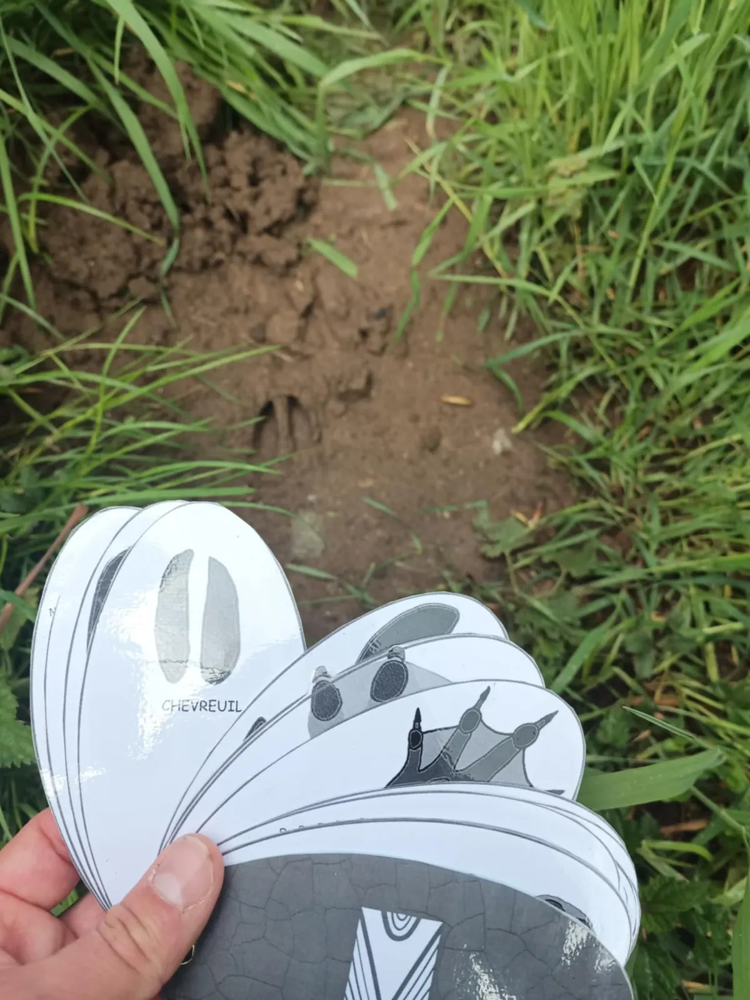
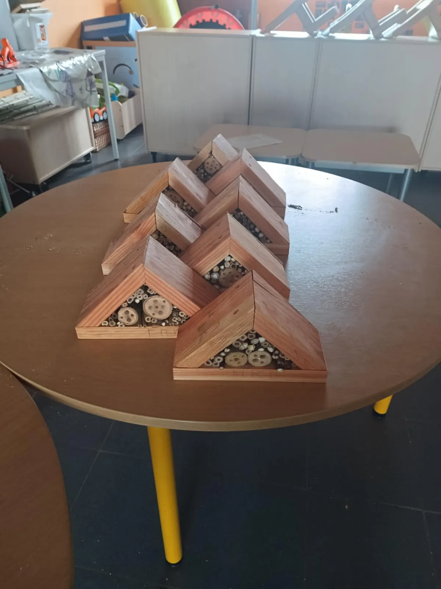
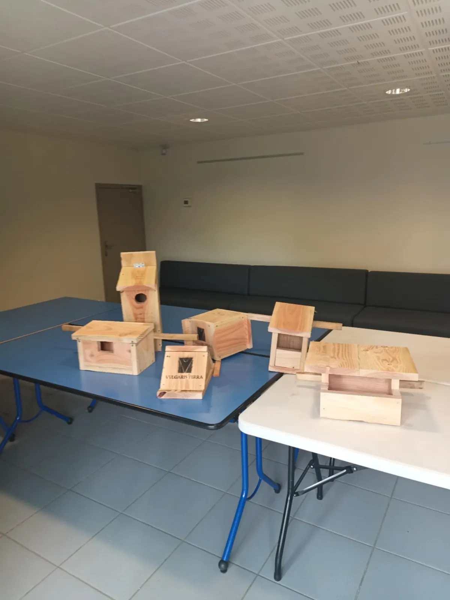
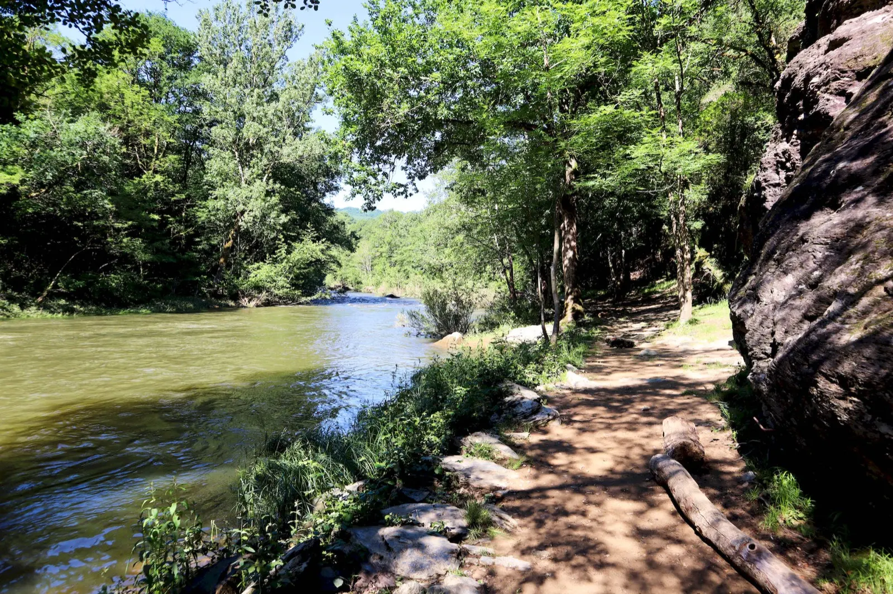
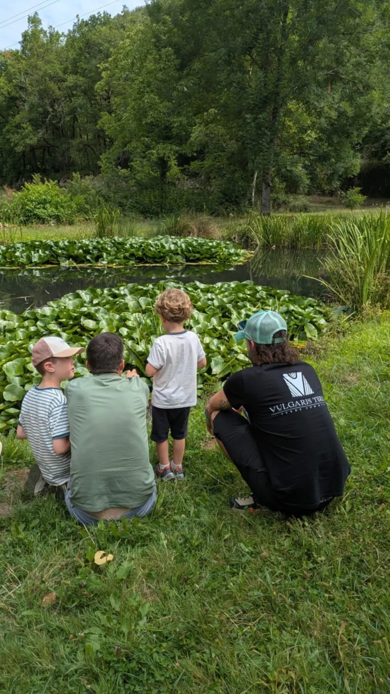
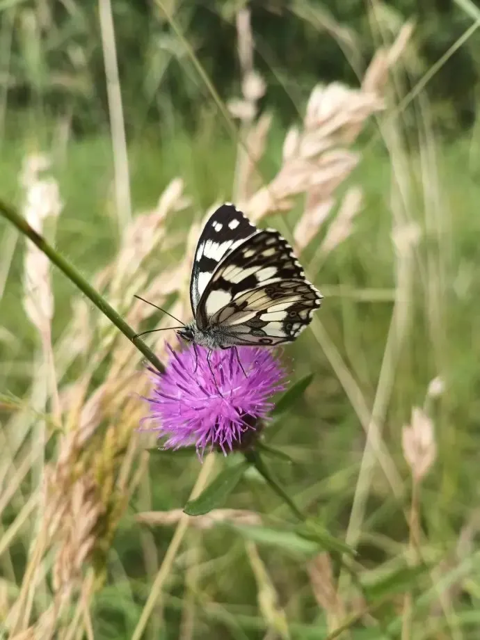
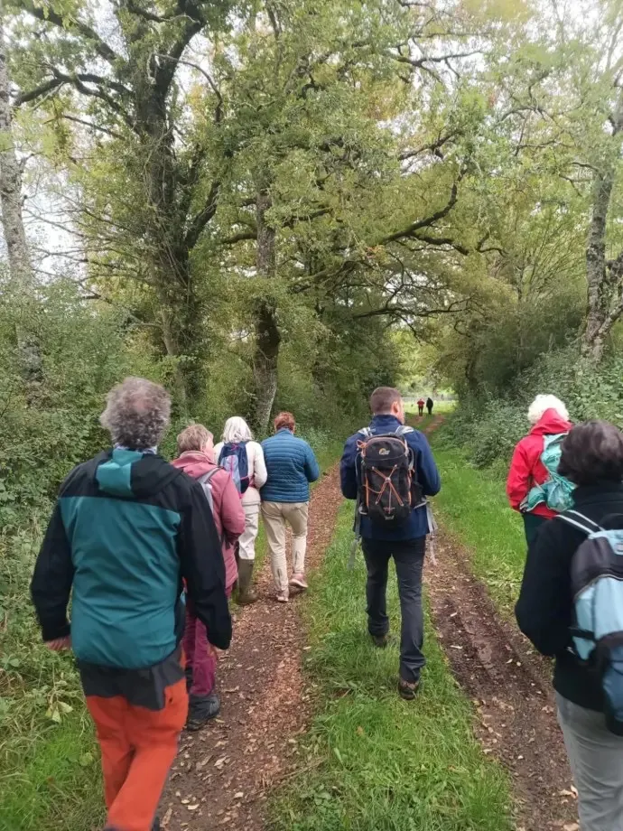
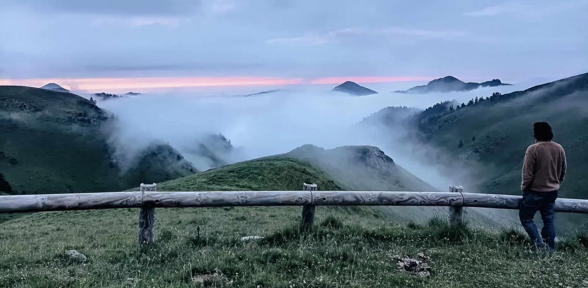

Anthony Vieillard, animateur, éducateur et formateur en environnement
Explorer et comprendre, c'est protéger la nature.
Des ateliers pour reconnaître les oiseaux, les petites bêtes, les arbres et les plantes sauvages, suivre les traces des mammifères, et des relevés taxonomiques. Pour les scolaires, les collectivités et les entreprises, surtout en Aveyron et dans le Lot.

- Aveyron et Loten région Occitanie, autour de votre lieu d'activité
- Tous les publicsscolaires, tourisme et vacances, entreprises et associations
- Sept « mondes »des oiseaux aux champignons, en passant par les haies
- « Terre commune »c'est ce que veut dire Vulgaris Terra, en latin
Ateliers nature
Une expérience immersive au cœur de la biodiversité, grâce à des ateliers vivants et interactifs. Et bien plus encore, selon vos envies et vos besoins.

Le monde des oiseaux
Observer et reconnaître les oiseaux : sortie avec fiches d'observation, apprentissage des jumelles, fabrication de nichoirs et mise en place d'un suivi. Aide au label Refuge LPO.
Le monde des petites bêtes
Construire des gîtes et des hôtels à insectes, fabriquer ses outils d'observation (aspirateur à insectes, parapluie japonais), découvrir une mare proche de votre structure.
Le monde des mammifères
Les traces et indices de présence animale : une clé de détermination pour les restes de repas, les habitats, les empreintes. Empreintoscope, et moulage d'empreintes si la météo le permet.
Le monde des arbres
Apprendre à les identifier et confectionner un arbrier, en papier recyclé sur plusieurs interventions.
Le monde des plantes sauvages
Les reconnaître et réaliser un herbier, possible en papier recyclé.
Le monde des haies
Comprendre leur rôle dans l'écosystème, puis créer et planter une haie champêtre ou bocagère près de votre structure.
Le monde des champignons
Créer une champignonnière, sur plusieurs interventions, si un emplacement s'y prête.
Et d'autres ateliers
De 3 à 4 heures au plus : les chauves-souris, avec fabrication de nichoirs à chiroptères, ou le biomimétisme, ces innovations inspirées par l'observation du vivant.
Aménagements d'espaces naturels
La conception et la mise en place de projets qui favorisent la biodiversité, sur votre terrain.
- NichoirsPour les passereaux et les rapaces
- MaresCréation de mares
- PlantationsHaies champêtres et arbres

Nichoirs fabriqués en atelierDes interventions adaptées à chaque public
Pour favoriser la découverte active de la biodiversité, le lien au vivant et l'engagement écologique, chaque intervention se conçoit pour ceux qui la suivent.
Scolaires
Tourisme et vacances
Entreprises et associations
Pour un renseignement ou un tarif, il suffit de me contacter. Le détail des thématiques
Sur le terrain
Sentiers de rivière, bords de mare, chemins creux : quelques images des sorties.

Balade le long du Viaur
Observation de la mare


Qui suis-je ?
Anthony Vieillard, animateur, éducateur et formateur en environnement.
J'interviens en région Occitanie, essentiellement dans les départements de l'Aveyron et du Lot. J'ai créé Vulgaris Terra pour venir vous rencontrer et, peut-être, vous faire redécouvrir la nature autour de votre lieu d'activité.
« Vulgaris Terra », en latin, signifie « Terre commune », et c'est exactement le message que je souhaite transmettre à travers mes interventions d'animation, d'éducation et de formation sur la nature et l'environnement.
Nous n'avons qu'une seule Terre, alors autant s'en soucier et la protéger. Le meilleur moyen de le faire est d'apprendre à connaître ses recoins, ses habitants et ses écosystèmes.
Organiser une animation
Enseignant, responsable associatif, entreprise engagée ou promeneur curieux : une animation à organiser, une question sur mes interventions, ou simplement un projet dont parler ? Donnez-moi quelques détails, chaque demande est traitée avec attention.
- Téléphone
- 07 70 48 79 53
- Secteur
- Aveyron et Lot, en Occitanie
- En ligne
- Le formulaire de contact